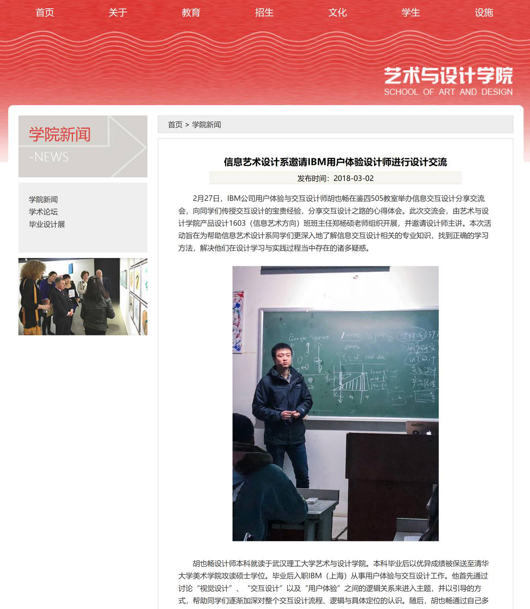
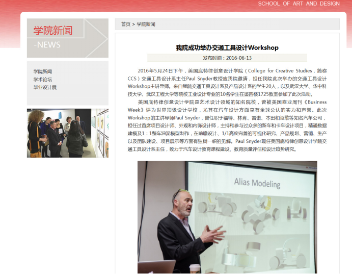
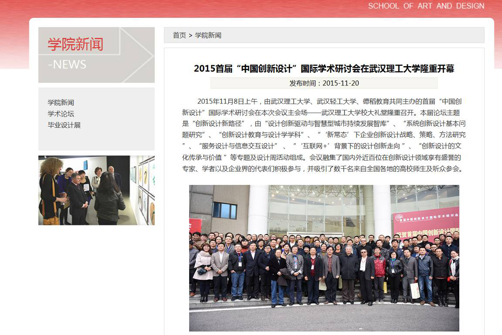
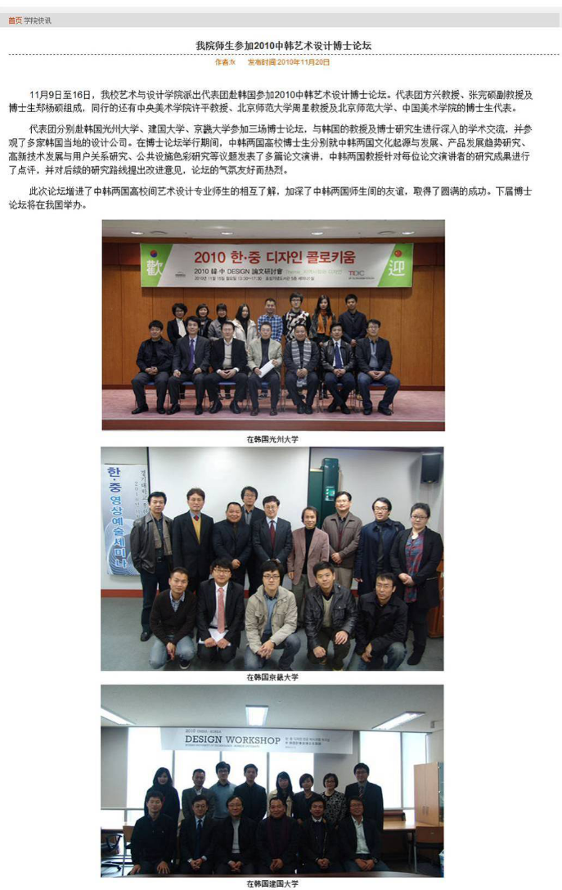

工业设计学术交流活动、学生竞赛获奖及社会影响相关报道
第二届国际青年学者论坛艺术设计学科分论坛于2018年3月30日下午在武汉理工大学举行。吸引了来自欧洲、非洲、亚洲各国的艺术家和优秀人才，旨在探讨设计行为与设计教育的共融，增强不同应用领域之间的合作，大力推动艺术学学科的一流建设。
信息艺术设计系邀请IBM用户体验设计师进行设计交流。IBM公司用户体验与交互设计师胡也畅在鉴四505教室举办信息交互设计分享交流会，向同学们传授交互设计的宝贵经验，分享交互设计之路的心得体会。
我院研究生皮正阳荣获“第四届中国设计院校大学生生肖狗文化设计大赛”金奖。2018年1月，我院工业设计系2017级研究生皮正阳同学捧得“第四届中国设计院校大学生生肖狗文化设计大赛”金奖。
第45届世界技能大赛湖北选拔赛在我院举行。018年1月14日，第45届世界技能大赛湖北选拔赛的商品展示技术比赛在艺术与设计学院产品设计系模型制作实验室举行。本次比赛由湖北省人力资源和社会保障厅主办。我院汤军教授担任了本次比赛的裁判员工作。
我院学生斩获第二届“黄鹤杯”工业设计大赛概念组金奖。在2018年刚刚落幕的武汉市第二届“黄鹤杯”工业设计大赛上，我校艺术与设计学院学子斩获多个奖项。其中，2016级研究生孙建昆同学的作品“无限循环智能黑板”荣获“概念组”金奖。
我院研究生孙建昆2017年连续获得11项设计竞赛奖项。2017年，武汉理工大学艺术与设计学院2016级研究生孙建昆同学连续获得11项设计专业竞赛奖项，其中包括意大利 A' Design Award & Competition 铜奖、中国设计红星奖原创奖、中国好设计奖提名奖、黄鹤杯工业设计大赛金奖、2017之新设计大赛三等奖、香港年度设计奖银奖等国内外重要设计竞赛的奖项。
传播有价值的思想——艺术与设计学院成功联合主办TEDxTanhualin年度大会。
坚持铸成传统，努力再创成果———艺术与设计学院学子荣获“上汽设计国际挑战赛”三等奖。2017年10月20日，第五届“上汽设计国际挑战赛”颁奖典礼，暨第二届“上汽设计·中国设计高校院长高峰论坛”在上海上汽设计中心隆重举行。上汽集团乘用车公司总经理王晓秋、副总经理崔卫国、上汽集团团委书记张东驰、人力资源部部长张建华、设计总监邵景峰等高层领导和国内外超过20所著名设计高校的教授专家出席了本次典礼。
我院产品设计系教师赴韩国参观交流。为拓宽教师团队国际视野，提升专业素养，我院产品设计系6名教师组团，于2017年10月15日至22日，赴韩国进行了专业展览参观访问与学术交流活动。
艺术与设计学院成功联合举办2017DesignGoodNow全球网络同步设计Workshop。北京时间9月23日上午6:00点，2017“DesignGoodNow”——由美国普渡大学主办，联合中国、日本、韩国、欧洲、印度等国家的36所高校设计类本科生举办的全球高校同步实时Workshop设计活动全面展开。DGN平台强调“行动设计”，设计项目通过使用最新网络视频技术进行远距离协作，同时整合不同学科背景以及专业知识，展示更有效和高效的设计过程。
【人民网】光谷·青桐汇二次元原创服装、文化陶瓷等引领设计创变。人民网武汉9月29日电 28日上午9时，由武汉市科技局、东湖高新区管委会主办，武汉天使翼创业有限公司承办的第63期光谷·青桐汇“互联网+设计创变”专场在文华学院学术报告厅举行。二次元原创服装、高级文化陶瓷、智能衣橱管理系统等项目参加路演，吸引投资者的目光。活动当日，近400位行业精英、政府专家、高校师生、投资人与创业者们齐聚一堂，观摩互联网设计领域的优质项目，探讨关于互联网+设计的未来无限可能。
我院工业设计系师生参加LeNSin国际可持续设计先导课程。LeNSin国际可持续设计项目中国先导课程于2017年5月29日至2017年6月7日在清华大学美术学院成功举办。LeNSin项目由米兰理工大学发起，欧盟委员会（ERASMUS+高等教育能力建设项目）支持，我院作为中方四大核心院校之一参加此项目。
日本学者原田昭一行来我院进行学术交流。2017年6月9日上午十点半，在艺术与设计学院工业设计系408室举行了一次小型国际学术交流会。日本筑波大学研究生院感性认知与神经科学部主席、名誉教授札幌市立大学院原校长原田昭先生，日本札幌市立大学校长、汽车设计及社会学教授莲见孝先生和张浦华教授应邀与大家做了互动访谈。
我校成功举办“当代亚洲设计教育新理念国际学术论坛”。 2017年6月9日-11日，“当代亚洲设计教育新理念国际学术论坛”在会议中心301举行，本次会议由我校艺术与设计学院承办。会议旨在立足亚洲、放眼全球、交融思想、整合资源、规划未来，创建具有中国特色的学术竞争力和社会影响力的设计教育大平台。
美国普渡大学TONG JIN KIM副教授做客艺设讲堂。2017年5月10日上午，来自美国普渡大学艺术学院TONG JIN KIM副教授做客艺术与设计学院，在鉴一合四教室为学院师生做了题为《未来用户体验设计》的精彩讲座。
韩国国民大学潘荣焕教授谈“城市UX设计”。 2017年4月19日下午3:00在武汉理工大学鉴一合四教室，来自韩国国民大学潘荣焕教授，举办了主题为“城市UX设计”的学术讲座。我校艺术与设计学院师生参加了此次讲座。
2017年4月22日上午，“武汉理工大学与苏州上声电子有限公司创新设计研究中心阶段性研究成果汇报（2011年-2016年）暨鉴定会”在武汉理工大学艺术与设计学院会议室举行。该项目是我院郑建启教授主持的工业设计学科产学研合作重要项目。
【武汉晚报】武汉理工两学生获设计界“奥斯卡奖”。 记者昨从武汉理工大学获悉，该校艺术与设计学院两名研究生孙晋和刘明德分别凭借一辆特殊的婴儿车和一只神奇的水杯，近日双双获得2017德国IF设计大奖，他们的作品从全球1.2万件作品中跻身前100强。
我院学子喜获国际工业设计大奖——德国iF奖。近日，全球工业设计权威奖项——德国iF设计奖评委会公布了2017年度概念奖的获奖名单。在周雅铭教授和郑刚强教授的指导下，我院2015级产品设计系研究生孙晋和2016级产品设计系研究生刘明德的两件作品从12000多件参赛作品中脱颖而出，摘得德国iF设计奖概念奖。
彭吉象教授受邀来我院做学术报告。2017年3月18日上午九点，彭吉象教授应武汉理工大学艺术与设计学院特邀，在我校鉴湖校区鉴一合四教室开展了名为“中国传统文化与中国艺术精神”的专题讲座。彭吉象教授曾任北京大学艺术学院教授、博士生导师，现任中国高教影视美育研究会副会长、中国高教影视研究会副会长、中国电视艺术家协会高校艺委会副会长、美国密执安州立大学艺术系客座教授。
美国桥港大学设计学院院长来我院交流访问。3月11日上午，美国桥港大学设计学院(SASD)院长Brian Lim教授与该校国际合作部Nicholas Venn先生应邀访问艺术与设计学院工业设计学科，产品设计系主任汤军教授主持了本次活动。 双方在办学历史、设计教育观念、实验室建设等方面进行了深入交流，重点在人才培养的国际合作、本科2+2人才培养、教师交流互访等事宜展开了洽谈。
日本九州大学村木里志教授来我院交流讲学。12月7日，日本九州大学艺术工学部工业设计学科长、博士生导师村木里志教授应艺术与设计学院邀请，来我院进行为期三天的“通用设计国际化课程”的教学。
我院研究生赴韩开展学术交流取得圆满成功。2016年11月21日-2016年11月26日，武汉理工大学艺术与设计学院方兴教授带领信息交互设计研究生团队共赴韩国参加2016年韩中日-国际设计学术大会和韩国首尔大学UX Lab设计坊举办的workshop活动。
我院学子在第三届大学生文化创意设计大赛取得优异成绩。2016年12月8日，湖北省第三届大学生文化创意设计大赛颁奖仪式在湖北剧院举行。我校获得2016湖北省第三届大学生文化创意设计大赛优秀组织奖。信息与交互设计专业研究生王雅洁、王芷、范智知同学的作品——《TA技校园技能社交》荣获全场最佳互联网应用程序创意设计奖。视觉传达专业本科生司晓雨、许辰同学的作品——《戏说》荣获全场最佳动漫形象设计奖。此外,信息与交互设计专业研究生王芷、王雅洁、范智知同学的作品——《微撕》和信息与交互设计专业研究生王静、肖源、孙梦婷同学的作品——《武汉历史建筑旅游纪念套装》分别获得最佳互联网应用程序创意设计类和最佳旅游产品设计类的提名奖。
美国普渡大学劳拉（Laura Drake）教授来我校交流讲学，完成了《设计方法学》国际化课程。在此期间，劳拉教授还在我院产品设计办公室与我院产品设计、展示设计专业的教师进行了互动交流，围绕中美工业设计教育理念、教学形式、实验室建设和人才培养模式等问题进行了深入讨论。
我院主办2016全球可持续设计工作坊武汉站（Global Sustainability Jam Wuhan）。2016年11月6日，由武汉理工大学艺术与设计学院工业设计(交通工具)系主办，江汉大学设计学院承办，昆明理工大学艺术与传媒学院协办的全球可持续设计工作坊武汉站（Global Sustainability Jam Wuhan）（以下简称武汉站）在江汉大学会议中心顺利闭幕。
德国包豪斯大学设计学院院长来我院讲学。2016年11月20日，德国设计学家格拉德(Siegfried Gronert)教授应邀作客理工大，来到位于鉴四教学楼的工业设计系讲学。艺术与设计学院院长潘长学教授主持了本次活动。格拉德教授，艺术学博士生导师，世界知名学府德国包豪斯大学艺术设计学院院长、德国首个艺术设计学博士点创办人和负责人、德国设计史协会会长。
我院成功举办交通工具设计Workshop。 2016年5月24日下午，美国底特律创意设计学院（College for Creative Studies，简称CCS）交通工具设计系主任Paul Snyder教授应我院邀请，担任我院此次举办的交通工具设计Workshop主讲导师。来自我院交通工具设计系及产品设计系的学生20人，以及武汉大学、华中科技大学、武汉工程大学等院校工业设计专业的10名学生在鉴四楼1725教室参加了此次活动。
本田技研科技（中国）有限公司来我院工业设计（交通工具）系参观交流。2016年5月26日，本田技研科技（中国）有限公司四轮研究开发中心造型部部长文入昭夫、造型设计科科长橘邦彥、设计师项辰歆、模型科科长北園直弘、模型科研究统括宮穀誠等一行五人，专程由广州总部来到我院参观交流。
美国资深工业设计及室内设计师Thomas Charles先生学术报告会——设计的理性思维。Thomas Charles，美国资深工业设计及室内设计工作者，世界上最大的商业标准组织——美国材料测试协会（ASTM）和美国纺织化学师与印染师协会（AATCC）的会员，其工作室遍布美国、东京和上海。Charles先生从事家居产品工业化设计、工业设计标准的研究和住宅及商业空间设计已有26年的经历，美国及中国市场的大型家居连锁等都有他设计的产品销售，在国内和国际的商业及住宅设计里也有不少经典案例。
【长江日报】漏斗小铲获国际设计大奖武汉理工大学子受邀将赴意大利领奖。因设计了一把特殊用途的小铲子，武汉理工大5位学子的作品，从全球7632份作品中，入围世界顶尖设计大赛“A'设计大奖赛”。 获奖的是武汉理工大学艺术与设计学院工业设计系创客实验室五名学生——2015届研究生、创客实验室学生负责人徐文鑫，以及本科产品设计系1302班的欧阳雪欣、荣雪晴、宋周全、刘畅，他们在汤军教授指导下完成的作品《Funnel scoop》（《漏斗铲子》），参加的是该赛事“餐具饮具、炊具、烤盘组”类评比，最终成为全球10余个该类获奖作品中的一个。
韩国光州大学姜德求教授个人作品展在马房山艺术馆隆重举行。2015年12月19日至24日，韩国光州大学姜德求教授的个人作品展在马房山艺术馆隆重举行。作品展以“视野”为主题，展出作品40多幅。作品以他个人的产品设计、艺术巡礼中的摄影作品为创作元素，借助电脑技术，为观众呈现了美轮美奂的视觉艺术作品，与大家一起分享了他对艺术与设计的追求、感悟和思考。本次展览的成功举办，对进一步增进两国两校师生相互了解、传统友谊、促进双方在文化和教育领域开展深入交流合作，起到了积极作用。
2015首届“中国创新设计”国际学术研讨会在武汉理工大学隆重开幕。2015年11月8日上午，由武汉理工大学、武汉轻工大学、德稻教育共同主办的首届“中国创新设计”国际学术研讨会在本次会议主会场——武汉理工大学校大礼堂隆重召开。本届论坛主题是“创新设计新路径”，由“设计创新驱动与智慧型城市持续发展智库”、“系统创新设计基本问题研究”、“创新设计教育与设计学学科”、“‘新常态’下企业创新设计战略、策略、方法研究 ”、“服务设计与信息交互设计” 、“‘互联网+’背景下的设计创新走向 ”、“创新设计的文化传承与价值 ”等专题及设计周活动组成。会议融集了国内外近百位在创新设计领域享有盛誉的专家、学者以及企业界
2015 LeNS-China研讨会在我校成功举办。2015 年11月9日，2015中国可持续设计学习网络（LeNS-China）成员研讨会暨首届中国创新设计国际学术研讨会青年学者论坛，在武汉理工大学成功举办。本次会议是LeNS-China成立后的第三次全体成员例会，共有十余所国内知名设计院校三十余位代表参加，会议内容主要围绕上年度工作总结和下年度工作安排展开。LeNS（Learning Network on Sustainability，可持续学习网络）是由欧洲与亚洲多所大学联合发起的国际性可持续设计学习网络，其目标是推进不同国家、地区在可持续设计教育领域的合作与交流。
美国普渡大学Cheryl Zhenyu Qian (钱振宇)副教授做客艺术与设计学院讲堂。2015年6月24日，美国普渡大学艺术设计学院副教授Cheryl Zhenyu Qian (钱振宇)访问艺术与设计学院。上午，她来到艺设讲坛，针对在产品创新设计过程中如何运用交互设计的理论、工具以及评估方法指导并提高产品创新设计的质量和效率，为150余名艺术与设计学院师生做了题为《激励产品创新设计的认知方法》的精彩学术讲座。
【长江网】旋转泡面盒获设计界奥斯卡 武汉理工大硕士生获德国大奖。昨日获悉，武汉理工大学工业设计2014级硕士生江坤，在一次旅行时发现，随身携带的桶装方便面太占地方，“怎么能不损坏这盒子又能把它给压扁点？”凭借这个点子，他在2015年德国IF学生设计奖中荣获设计大奖。
我院两组学生作品荣获2015德国IF学生设计大奖前100。近日，我院两组学生作品同时获得IF学生设计奖(IF student design award )前100名，分别是2014级研究生江坤组的设计作品“Rotating Packaging Box”和2013级研究生王蕊组的设计作品“Growing生长的凳子”。
2011年4月16日，“传统日用器物及可持续设计创新工作坊”在我院举行。
2011世界华人工业设计论坛在我校举行。
我院师生参加2010中韩艺术设计博士论坛。
